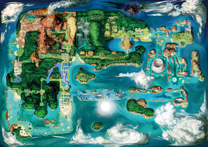

Kanto
Kanto é uma região lendária no universo Pokémon, conhecida por ser a primeira região apresentada aos treinadores na série de jogos originais.

Johto
Localizada a oeste de Kanto, Johto é uma região pitoresca e cheia de charme. Com uma rica mistura de tradição e modernidade.

Hoenn
Hoenn é uma região tropical deslumbrante que possui uma grande variedade de climas e paisagens exuberantes.

Sinnoh
Sinnoh é uma região remota e misteriosa, caracterizada por suas paisagens impressionantes, que variam de montanhas cobertas de neve.